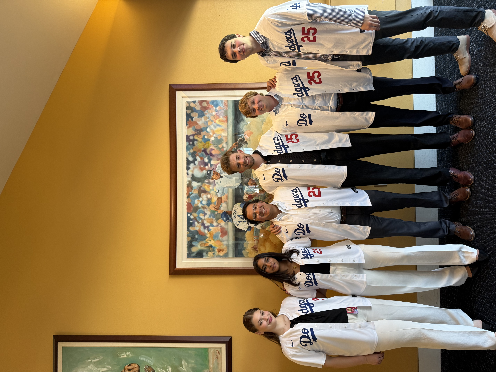
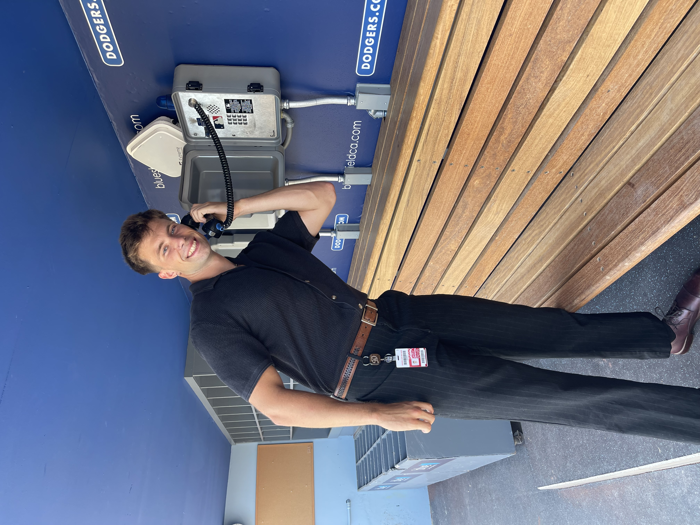

Dodgers Internship

Last Day of the Internship

Me making a call to the bullpen
During my internship with the Dodgers, I was exposed to how a premier sports organization collected, processed, stored, and disseminated biomechanical information across the organization. I was able to contribute to the Performance Science department by creating machine-learning models (primarily forest algorithms) in Python to understand the relationships of key biomechanical variables specific to each player, and how to clean and use extremely large datasets for these algorithms. I was also able to present my findings to Dodger's leadership and to player development staff.
This experience was invaluble to my professional development. It provided an opporutnity to genuinely contribute to an amazing organization, and to gain knowledge from industry experts while also vastly improving my coding and data science skillset.